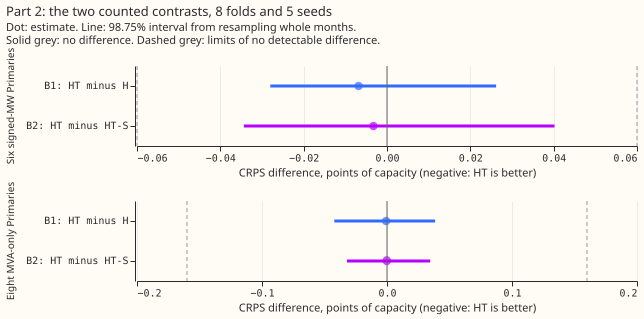
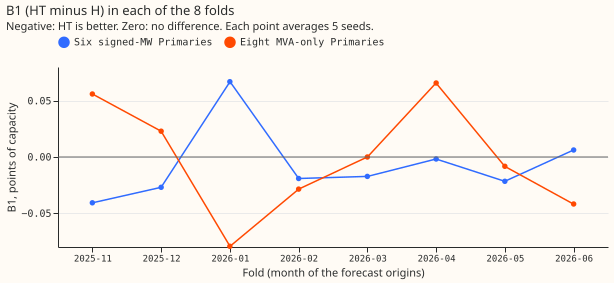
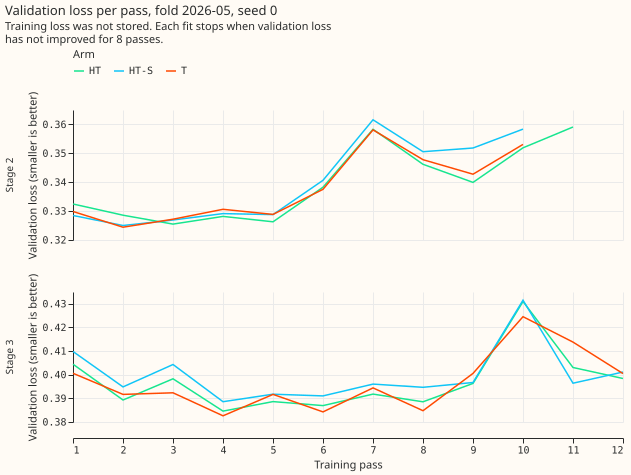
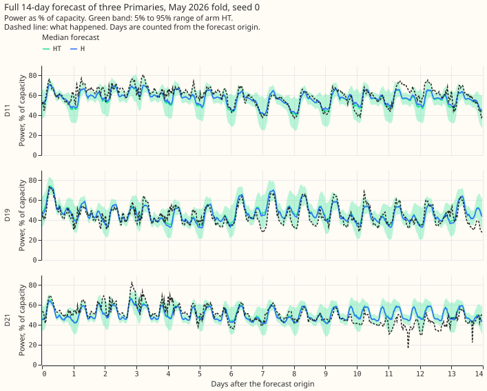
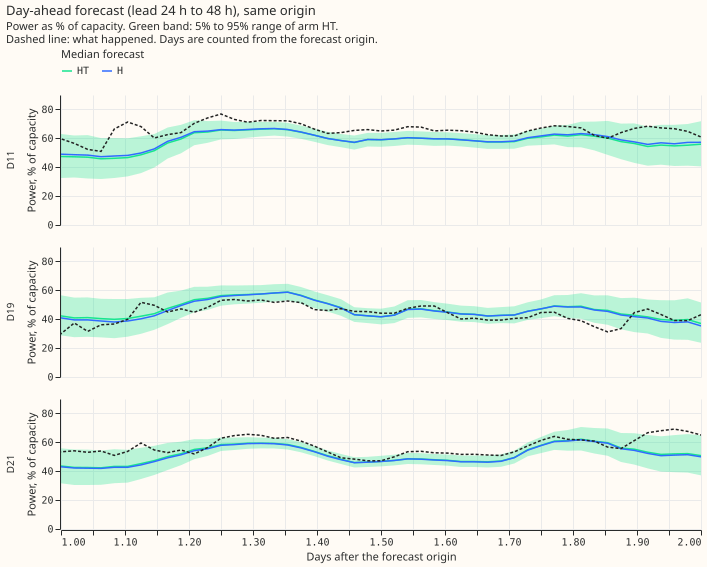

Does an explicit forecast of unmetered solar output in the target row help the axial-attention network forecast a Primary's demand?
We asked whether a neural network that forecasts a Primary substation's electricity demand becomes more accurate when it is also given a forecast of the solar power generated behind the substation, for the day being forecast. The network is the axial-attention network of experiment 713, and experiment 716 (unmetered PV, part 1: the history estimate) already gives it an estimate of the solar output of each of the 14 past days. We added a forecast for the target day: the substation's installed solar capacity times a yield curve driven by the ensemble-mean and ensemble-spread shortwave irradiance of the 00:00 UTC European Centre for Medium-Range Weather Forecasts (ECMWF) ensemble (ENS) run of the origin day. We compared the network with and without that forecast on 16 Primaries over 8 monthly test periods and 5 random seeds. A second network read the forecast issued 28 days earlier, which has no information about the target day, so that a gain from the target day's own sky could be told from a gain from the extra parameters.
The forecast error did not change, and every interval includes zero. Both differences are within 0.007 percentage points of capacity of zero.
This page is part 2 of follow-up F7. The design is condensed from the
private design note f7_design.md, and the details that this part shares with part 1 (the
estimate of past solar output, the as-of capacity, the network paths, the training recipe, the
known-answer worlds, and the leakage rules) are on the page of experiment 716.
Result
The verdict is not supported, taken from the pre-registered mapping and applied as written.
Each of the two counted contrasts is read in two groups of Primaries: the six signed-MW Primaries,
whose power is metered in signed megawatts, and the eight MVA-only Primaries, which are metered only
in megavolt-amperes (MVA). Arm H is the network without the target-row forecast, arm HT is the
network with it, and arm HT-S is the placebo network that reads the forecast issued earlier, as
the section "What is compared" describes. B1 is arm HT minus arm H, and B2 is arm HT minus arm
HT-S. Each of the four counted readings is "no detectable difference", because its 98.75% interval
lies inside plus or minus 0.06 points of capacity (six signed-MW Primaries) or 0.16 (eight MVA-only
Primaries). The verdict function of experiment 716 maps four such readings to not supported, and
closes_line is true, so the verdict adds one to the stop-rule count and closes the line. The
prediction written before any fit held: B1 lies inside its ranges, and the interval of B2 includes
zero in both groups. The warm-start states of experiment 713 come from a waived known-answer gate,
and the verdict concerns a forecast added to a network that already reads the historical estimate.
Every number in this section comes from score/part2.json or score/secondary_part2.json in the
data folder of this experiment.
| Contrast | Group | Point | Interval (98.75%) | Seeds with the sign of the point |
|---|---|---|---|---|
B1: HT minus H |
six signed-MW | -0.0068 | -0.0280 to +0.0262 | 4 of 5 |
B1: HT minus H |
eight MVA-only | -0.0007 | -0.0422 to +0.0385 | 2 of 5 |
B2: HT minus HT-S |
six signed-MW | -0.0033 | -0.0344 to +0.0402 | 4 of 5 |
B2: HT minus HT-S |
eight MVA-only | -0.0002 | -0.0320 to +0.0346 | 3 of 5 |
Control: HT-S minus H |
six signed-MW | -0.0036 | -0.0300 to +0.0221 | 2 of 5 |
Control: HT-S minus H |
eight MVA-only | -0.0005 | -0.0144 to +0.0159 | 2 of 5 |
The contrasts are differences of the continuous ranked probability score (CRPS) in percentage
points of capacity, over leads of 24 h up to 240 h, and a negative number favours the first arm.
The 99.375% sensitivity reading (eight readings across both parts) changes no verdict. The B1
intervals of the sensitivity reading are -0.0292 to +0.0293 and -0.0460 to +0.0417. The seed guard
fails in both groups, so a pre-registered gain reading was unreachable as well. The three guards
of the reading are false in every row.


The 95% report-only readings are consistent with a tie, with two exceptions that change no
verdict. Report-only readings are not corrected for the number of readings. Arm T is described
in the section "What is compared", and M* and the Candidate are the benchmarks that the
benchmark field of the front matter lists.
| Reading (95%) | Six signed-MW | Eight MVA-only |
|---|---|---|
HT minus M*, 5 seeds |
-0.0235 [-0.0463, -0.0015] | -0.0191 [-0.0569, +0.0235] |
HT minus the Candidate, 5 seeds |
-0.1707 [-0.2710, -0.0724] | +0.0030 [-0.0924, +0.0841] |
HT-S minus the Candidate, 5 seeds |
-0.1674 [-0.2769, -0.0579] | +0.0032 [-0.0790, +0.0684] |
T minus M*, 2 seeds |
-0.0271 [-0.0604, +0.0073] | -0.0340 [-0.0602, -0.0067] |
HT minus T, 2 seeds |
+0.0212 [-0.0136, +0.0643] | +0.0131 [-0.0274, +0.0508] |
Two exceptions stand out. First, HT minus M* excludes zero at the six signed-MW
Primaries, but HT minus H does not, so the difference from M* does not come from the
target-row forecast. Second, HT is worse than H at the two Primaries D15 and D18, whose
history is short: the first contrast pooled over those two is +0.136 [+0.018, +0.269] (95%), and
D15 alone is +0.260 [+0.013, +0.554]. Those two Primaries belong to neither counted group. Arm T,
which has the target-row forecast and no historical estimate, scores as well as HT within its
intervals, on 2 seeds only.
The first contrast by lead band is flat. At the six signed-MW Primaries, HT minus H is
-0.0133 [-0.0318, +0.0108] at leads of 24 h to 72 h, -0.0106 [-0.0286, +0.0149] at 72 h to 120 h,
and -0.0027 [-0.0247, +0.0235] at 120 h to 240 h. At the eight MVA-only Primaries the contrast is
+0.0005, -0.0012, and -0.0010, with intervals of about plus or minus 0.03 to 0.035. All intervals
include zero. The pooled reading over all 16 Primaries is +0.0140 [-0.0037, +0.0311].
Secondary readings S1 to S5 (95%, one of 14, so one false positive is likely) mostly read as a tie, and four of them have intervals that exclude zero. S1 and S2 are B1 and B2 on the solar block (06:00 to 14:30 UTC) of the three sunny folds, 2026-04 to 2026-06. S4 is B1 on the whole band of the four dark folds, 2025-11 to 2026-02.
| Reading | Six signed-MW | Eight MVA-only | Holds |
|---|---|---|---|
S1: HT minus H, solar block, sunny folds |
-0.0067 [-0.0124, -0.0011] | -0.0045 [-0.0886, +0.0564] | No, No |
S2: HT minus HT-S, solar block, sunny folds |
-0.0420 [-0.0482, -0.0278] | -0.0036 [-0.0430, +0.0555] | No, No |
S4: HT minus H, dark folds |
-0.0043 [-0.0356, +0.0435] | -0.0072 [-0.0553, +0.0392] | Yes, Yes |
The four intervals that exclude zero change no verdict. S1 at the six signed-MW Primaries excludes zero but is 0.007 points, far below the 0.05 that the reading needs. S2 at the same Primaries excludes zero with a point of -0.042, still above the -0.05 that the reading needs, so neither reading holds. S2's interval is narrow because the seeds agree. S3 (the gap between the dull and the sunny third of days) is -0.0393 [-0.0617, -0.0154] at the six signed-MW Primaries and -0.0769 [-0.1146, -0.0403] at the eight MVA-only Primaries, with 90 origin days, and holds in neither group. S5, the Spearman correlation between the per-Primary first contrast and the photovoltaic (PV) share, is -0.160 [-0.730, +0.509] over 14 Primaries.
Leaving one Primary or one month out does not change a verdict, and flips the sign of B1 at the eight MVA-only Primaries in several cases because the point is almost zero. At the six signed-MW Primaries, B1 stays negative whichever Primary or month is left out (from -0.0121 to -0.0018 over the Primaries and from -0.0173 to -0.0019 over the months). At the eight MVA-only Primaries, B1 is -0.0007 with all eight, and leaving out D4, D12, D21, D2, or D8 gives a point between +0.00002 and +0.0083, while leaving out D22 gives -0.0140.
Loss curves

The figure shows validation loss only, because the fit logs store no training loss. Each fit
log keeps the validation-loss value of every pass (val_history), its best value, and the
stopping pass, and keeps no per-pass training loss in any of the 96 fits (HT 40, HT-S 40, T
16). The curves are those of fold 2026-05 and seed 0. Every fit stopped by patience (8 passes
without improvement) before the 60-pass cap, with a mean of 14.4, 13.7, and 13.7 passes in stage 2
and 17.0, 16.0, and 15.9 in stage 3 for HT, HT-S, and T.
Forecast examples


The examples use Primaries D11, D19, and D21 at the middle origin of the fold 2026-05, seed 0,
chosen before the plots were drawn. The band is the 5% to 95% range of arm HT, and the lines are
the median forecasts of HT and H and the actual. The bands widen with the lead. A caveat
applies to D19 and D21: the as-of capacity factors of the fold 2026-05 look ahead of the forecast
origin at both Primaries, so the solar estimate of arm H carries information that a live service
would not have. D8, D12, and D22 are not shown, for the same reason. The charts were rendered with
headless Chromium and read for labels, overlaps, and units.
Attention maps
Part 2 stores no attention maps of its own, so the maps of fold 2026-05, seed 0, are those of
experiment 716. Arms M* and H are stored in work/attention/ of
experiment
716 (unmetered PV, part 1: the history
estimate), and the same look-ahead caveat for D19 and D21 applies. No attention extraction was run
for arm HT.
Checks
- The median forecast minus the mean forecast, per site, is not stored.
part2.jsonhas no table of it, so the page does not report it. This is a gap against the plan. - The error of the median beside the CRPS contrast. At the six signed-MW Primaries, the normalised mean absolute error (MAE) contrast is -0.0114 [-0.0423, +0.0237], the same direction as B1. At the eight MVA-only Primaries the MAE contrast is +0.0048 [-0.0564, +0.0635] against a CRPS contrast of -0.0007, so the two point in different directions, and both intervals include zero. The disagreement fires audit trigger 3 on its wording, with no verdict at stake.
- Audit triggers: the skill requires an audit before merge when any trigger holds, so a read-only audit of triggers 3, 4, and 5 was run, and the audit found no flip. Trigger 1 fires, triggers 3 and 4 fire on their wording, and trigger 5 fires on its wording in a report-only reading. A Sonnet-sized agent that did not write the code recomputed each reading with the scorer's own functions, 100,000 resamples, 5 seeds, and no GPU, following the manager's ruling (b) to audit these triggers instead of waiving them.
- Trigger 1 fires. The known-answer check KF9 failed and the maintainer waived it, the same kind of waived check that experiment 713 counted as trigger 1.
- Trigger 3 fires nominally at the eight MVA-only Primaries, and the trigger cannot change the
verdict. B1 on CRPS is -0.00074 [-0.0422, +0.0385] at 98.75%. B1 on the normalised MAE of the
median is +0.00480, with [-0.0564, +0.0635] at 95% and [-0.0726, +0.0780] at 98.75%. Both match
part2.jsonexactly. The verdict rule counts CRPS only, and even if the MAE counted, its interval includes zero and lies inside the limit of 0.16. The per-seed CRPS differences are +0.024, -0.037, +0.028, -0.012, and +0.027, so the sign is noise. - Trigger 4 fires on its wording at the eight MVA-only Primaries, and no leave-one-out reading
flips the verdict. B1 at those Primaries, leaving out each Primary in turn (98.75%): D3 -0.00203
[-0.0487, +0.0429], D19 -0.00236 [-0.0486, +0.0403], D4 +0.00054 [-0.0452, +0.0437], D12 +0.00275
[-0.0360, +0.0349], D22 -0.01401 [-0.0518, +0.0213], D21 +0.00086 [-0.0444, +0.0441], D2 +0.00002
[-0.0464, +0.0455], and D8 +0.00830 [-0.0221, +0.0438]. The points match the stored
leave_one_out.eight.without_primaryvalues to 15 digits. Every interval includes zero and lies inside plus or minus 0.16, and the largest interval end is +0.0455 (D2 left out). - Trigger 5 (a nested arm beats its container) does not fire for the counted groups, and fires on
its wording at D15 and D18 as a report-only reading. Arm
His nested inHT, andHbeatsHTat those two Primaries: +0.136 [+0.018, +0.269] at 95%. The scorer'saudit_trigger_5tests only the two counted groups at 98.75% and is false, so the reading does not count toward the verdict. The reading is weak: it covers only two Primaries, it is a 95% report-only interval among many cuts, and its month-block t interval of -0.025 to +0.290 includes zero, with 3 of 5 seeds sharing the sign. The second clause of the trigger (a control that should change nothing) did not fire. - Trigger 6 fires only on a liberal reading. The trigger compares a headline interval with the same contrast in a sister experiment. The 98.75% interval of B1 is 1.10 times as wide as that of A1 at the six signed-MW Primaries and 1.52 times as wide at the eight MVA-only Primaries, and the interval of B2 is 1.78 times as wide as that of A2 at the eight MVA-only Primaries. Only B2 against A2 at the six signed-MW Primaries exceeds the factor of 2, at 3.13 times as wide. Trigger 2 does not apply, because the result matches its prediction, and trigger 7 was not assessed.
- Cold nights. The cold-night difference is +0.0011 at the six signed-MW Primaries and -0.0406
at the eight MVA-only Primaries (
cold_night_differenceinpart2.json). The guard ofsupportedfor the six signed-MW Primaries holds, and for the eight MVA-only Primaries the guards of leaving one Primary and one month out and of the MAE fail. The verdict does not depend on those guards. - Tails. The upper limits of the 95% intervals of the q01 and q99 pinball-loss contrasts are
0.0092 and
0.0308 at the six signed-MW Primaries and 0.0005 and 0.0146 at the eight MVA-only Primaries,
all below their limits (
guards.<group>.tails). Coverage tables for q01, q05, q95, and q99 were not produced. - The equivalence of the lean loader passed. The check script ran in one fold and 2 seeds of
arm
HT, and the largest difference was 0 in every column with identical row order (log in the experiment manager's scratch folder,717_check.log).
Planned tables that do not exist
Several tables of the plan were not produced, and this page does not invent them. The stored
files have no table of each arm's absolute CRPS beside the manual heuristic and BG2, no q01, q05,
q95, and q99 coverage table, no avoidable-curtailment cost, and no four load-shift scenarios. The
plan's reading of cold winter nights is the single difference above, with no per-arm score. The
report script e00717_report.py stops with a TypeError while printing the report-only
contrasts, after the cold-night line, because it indexes a list as a dictionary. This page takes
those contrasts from part2.json directly. The script was reviewed and was not edited.
The waived known-answer gate
Known-answer check KF9 failed and the maintainer waived it, so the gate is a waived known-answer
check and not a passed one. The gate is the one of part 1. KF9 requires arm H to beat arm H-S
on the solar block of world WH by half the gap. Its value is 0.00070 against the need of 0.00729,
and its secondary readings (days 1 to 60, days 61 to 236, and pass 60) fail as well. KF10, KF11, and
KF12 pass. No threshold and no verdict rule changed. An audit of the failure found no implementation
fault and two method findings. First, the patience-8 rule scored arm H at passes 4, 23, and 5 of
seeds 0, 1, and 2, against global bests at passes 43, 55, and 32, because the history path learns
slowly. Second, the pass mark forces arm H below the oracle ridge: arm H-S scores 0.0394 on the
solar block and arm Z 0.0397, the naive ridge reference 0.0470, and the oracle ridge 0.0324, so
arm H must score 0.0321 or better, below the oracle ridge's 0.0324. Every statement that the
history path recovers the hidden sky from the PV estimate is therefore unsupported by a passing
known-answer test.
The early-stopping pre-check of the known-answer worlds read one seed of three, and the other
seeds of arm M in world WH are noisier than its limit. The pre-registered pre-check reads arm
M of seed 0 only. At rung 4 the pre-check passed in both worlds, with a last-10 validation-loss
noise of 0.0109 in world WH against the limit of 0.0225, and 0.0121 in world WT against the limit of
0.134. Seeds 1 and 2 of arm M in WH have a last-10 noise of 0.029 and 0.031, above the WH limit,
so the rung-4 pass in WH depended on seed 0. In WT, seeds 1 and 2 have 0.038 and 0.016, below the WT
limit. A fresh numbers review checked this reading against the stored tables of part 1 and found no
mismatch in the page's quotations of them. These values are copied from the page of experiment 716
and are not re-derived here.
Why this runs although the stop rule counts earlier verdicts
The maintainer asked for follow-up F7 by name and confirmed the scope on 2026-11-23 ("I
confirm."), relayed through the experiment manager. That instruction is the approval that the
demand protocol requires, and part 2 is at least the seventh counted experiment on its idea. The
stop rule counts the verdicts not supported and refuted on one idea, resets the count at
supported or small gain, and from the fourth experiment requires the maintainer's approval and
scoring at every Primary. The last supported or small gain verdict on this idea is experiment
325, in the GAM stack. Part 2 is scored at every one of the 16 Primaries.
| Experiment | What the experiment gave the forecast | Verdict | Counted |
|---|---|---|---|
| 409 | An explicit solar term in the pooled mixture density network | not supported |
Yes |
| 477 | An explicit PV module in the net demand neural network | not supported |
Yes |
| 501 | An explicit solar-output column from an as-of capacity | refuted |
Yes |
| 644 | An explicit solar-capacity term with ENS weather | refuted |
Yes |
| 655 | A member-level solar curve with cell temperature | refuted |
Yes |
| 664 | Net demand as gross demand minus a sampled ENS solar curve | refuted |
Yes |
| 661 | Whether the ENS time step explains experiment 644, and a bias adapter | refuted |
Borderline: gives 7 |
| 350, 351 | A capacity-free irradiance curve and a capacity read-out in the GAM stack | not supported, twice |
Arguably: gives 9 |
| 329, 419 | A 3-member solar distribution; a solar summary in the mixture density network | not supported, twice |
Borderline: gives 11 |
| 031, 349, 405, 416 | PV features in XGBoost and the GAM stack; explicit term with learned capacity or 5 seeds | inconclusive |
No |
| 352, 639, 643 | Explicit terms scored with recorded weather | partly supported |
No: neither counts nor resets |
The expectation, written before any fit, was a tie, and the result was a tie. Six earlier experiments found that an explicit PV term built on forecast weather did not help net demand (the table above), and the target tokens already carry ENS shortwave. With 5 seeds the design detects, with 80% power, a CRPS difference of 0.06 points of capacity at the six signed-MW Primaries and 0.16 at the eight MVA-only Primaries.
This part departs from the advice of experiments 644 and 655 (no explicit solar term in the ENS demand network) on the maintainer's instruction. It follows experiment 661's advice to keep production's window-mean resampler for ENS shortwave and experiment 501's advice to judge a capacity by a placebo test. The new element over the counted experiments is the paired history estimate of experiment 716. Experiment 713's screen stop rule binds this part: if the rule fires, or if part 1 stops at its screen, part 2 stops and asks the manager. Experiment 713's known-answer gate failed KA3 and KA12 and was waived by the maintainer on 2026-11-23, so every verdict here makes no claim about era recognition or level shifts.
What is compared
| Arm | PV input | Seeds | Role |
|---|---|---|---|
H |
Copernicus Atmosphere Monitoring Service (CAMS) PV̂ in the 14 history rows |
0 to 4 | Reference of B1 (experiment 716's fit) |
HT |
As H, plus the ENS PV forecast in the target row |
0 to 4 | Treatment |
HT-S |
As HT, with the target-row forecast from the ENS run 28 days earlier |
0 to 4 | Counted placebo |
T |
The ENS PV forecast in the target row only | 0 and 1 | Report-only: scope (b) without scope (a) |
B1 is read against H and not against M*, so that part 2 is not credited with a gain that part
1 made. HT with its target paths at zero is H exactly, and both start from the same state of
M*. HT minus M* and T minus M* are report-only. HT-S reads the ENS run issued 28 days
before the origin day at the same lead day, with the same clear-sky-index transfer on the mean and
the spread. For origins in the first 28 days of the ENS record the donor run is 28 days later. That
run is issued after the sample's origin and says nothing about the sample's target day; the check
counts those origins in training and in held-out days and the page lists them.
The target-row forecast
The target row gets two numbers per half-hour, p0_mean and p0_sd, from the yield curve's mean
and standard deviation over three Gauss-Hermite nodes of the ENS shortwave. The shortwave and its
spread are columns 0 and 7 of the Candidate's non-lag layout, un-standardised with the fold's
standardiser from float32 source rows, with the ENS-mean 2 m temperature. A second token path γ_t ⊙
(W2_t GELU(W1_t [p0_mean·ok, p0_sd·ok, ok]) / r_t) enters the target tokens, a table c[primary]
multiplies p0_mean in the mixture means, and the head map reads p0_mean and p0_sd. All of them
start at zero with a random partner. Arm HT has 4,800 new parameters (134,799 in all, 3.7% more
than M*). With a = 1 and c = -1 the mean is the similar-day mean of gross demand minus the
forecast PV, the decomposition of experiment 064. The input p0_sd lets the head widen the mixture
when the ENS members disagree about the sky. The network, training recipe, optimiser groups (1e-2
for a and c, 3e-3 for γ_h and γ_t), and known-answer checks are those of experiment 716,
with world WT and checks KF11 and KF12 for part 2.
KF11 requires HT-S minus HT in world WT to be at least
0.5 × the gap of WT (HT-S reads the target sky of the run 28 days earlier), and the same two
pre-checks as in part 1 apply to WT: the gap of at least 0.010 and the early-stopping check, which
uses the rung that part 1's ladder chose.
Counted contrasts and the decision rule
| Id | Contrast | Question |
|---|---|---|
| B1 | HT minus H |
Does an explicit PV forecast in the target row add to the network that reads the historical estimate? |
| B2 | HT minus HT-S |
Does the gain come from the forecast sky of the target day? |
Each part has four counted readings, so each interval is read at 98.75%. Because the two parts share
arm H, each page also reports its contrasts at 99.375% (eight readings across both parts) as a
labelled sensitivity reading that changes no verdict. Report-only, at 95%: HT minus M*, T
minus M* (the reading that compares directly with experiments 501 and 644), HT minus T, every
arm minus the Candidate, every contrast at all 16 Primaries, by lead band, by Primary, with one
Primary left out, and with one month left out. The supported guards are those of experiment 716,
except the mask guard, which belongs to part 1. Secondary readings S1, S2, and S4 (the solar block
of the sunny folds, and no harm in the dark folds) apply to B1 and B2 and change no verdict.
Seeds 2 to 4 run only if a counted treatment contrast gives a reason to continue. After the 8-fold, 2-seed reading of the counted contrasts, seeds 2 to 4 run only if, for at least one counted treatment contrast, the point estimate is below zero in at least one group (the six signed-MW Primaries, the eight MVA-only Primaries). If every counted treatment contrast has a point estimate at or above zero in both groups, the experiment is written up at 2 seeds with the pre-registered two-seed values, and the page states that the futility rule fired. A reading with a point estimate below zero is the only reading that opens seeds 2 to 4, and the ablation contrasts (A2 and B2) never open them.
At 2 seeds, the counted points of B1 (-0.0014 and -0.0033) were below zero in both groups, so the rule opened seeds 2 to 4. The rule was added before any treatment score was read. No threshold or verdict rule changed. The fit logs of phase 3 already held validation-loss lines when this rule was added (five at the time of the edit), and they were not read before the edit.
Fits run in the order of phases 3, 4, and 5 before phase 6, and the fit logs are read for stopping passes only. Every fit's log summary reports its stopping pass: the stage, the pass number, and whether the 60-pass cap or the patience ended the stage. The implementer reports that table to the manager, and reads no validation loss and no treatment score from the logs before the two-seed scores are read.
Leakage, compute, and plots
The target-row forecast is buildable live. The ENS run of the origin day is issued 9 hours
before the 09:00 UTC native origin, and the experiment asserts nwp_init_time <= origin - 9 h for
every row and for the PV table. A poisoned-input check sets every target-row value from a run
issued after the native origin minus 9 hours to 1e6 and to NaN and requires every assembled input
to stay unchanged. Because H carries the lab shortcut on history weather, every score is a
ceiling for a live forecast. Part 2 needs about 8 GPU-process-hours (HT and HT-S on 8 folds
with 2 seeds, 2.6; seeds 2 to 4, about 3.8; T, 1.3), inside a reporting ceiling of 24 across
both parts. Part 2 has no screen, because the stop rule's requirement of scoring at every Primary
replaces any screening arm. The plots are those of experiment 716, with HT added to the
day-ahead and 14-day forecasts, and the learned c per Primary. No page names or plots a metered
generator's time series.
Risks
- The ENS cloud error defeated the explicit term in experiments 644, 655, and 661.
HTreads the same forecast.p0_sdand the zero-initialised gain let the network discount the forecast. - A nested arm beating its container (
HbeatingHT) is audit trigger 5 of experiment 713. - The design cannot resolve a gain under 0.06 points of capacity at the six signed-MW Primaries, although the smallest gain worth porting is 0.02 points of capacity.
Method
All fits of the three arms are stored and scored, so these bullets describe the design as it was run.
- The known-answer gate is waived at KF9:
e00716_waive_gate.pywrites the gate file withwaived: true, the failed check and its values, the code hash, and the sha256 of the last-run file and ofe00716_known_answer.py. The scoring rule of the known-answer checks, patience 8 and the median of the 5 passes ending at the best pass, is unchanged. - The pre-check reads seed 0 only: the noise limit of the early-stopping pre-check comes from
the last 10 validation losses of arm
Mat seed 0. At seeds 1 and 2 of WH the same noise is 0.029 and 0.031, above the limit of 0.0225 in WH at rung 4. The diagnostic best pass of the pre-check uses patience 30, the patience that trains armM. An Opus review of the code behind the pre-check (commit 126577d1d) was clean. - Architecture and training regime: experiment 716's, with the target-row paths of this page.
Every arm starts stages 2 and 3 from the stored stage 1 state of
M*of the same fold and seed. - Measurement: as experiment 716, on 8 folds and 16 Primaries, with no screen.
- Standing practices followed: as experiment 716.
Amendments made after the first code review
The reference regressions, the gating fits, and the cold-night guard are as on the page of part 1. The amendments that part 1's page lists (48 ridge regressions per Primary pooled over the 14 leads, the gating fits that mirror the real recipe, and the cold-night guard computed inside the scorer) apply to this page unchanged.
KF7 runs on the GPU, as on the page of part 1. The stored forecast of M* was written on the
GPU, and the CPU path differs from it by 8.4e-6 of capacity at the 99th percentile.
The pre-check, the step up, and the reserve are as on the page of part 1. After a failed
early-stopping pre-check at rung N, the step up to the next rung needs a failed pre-check record of
rung N, every extra fit of arm M is charged to the reserve of phase 9 of design section 10, and F7
stops before any PV fit if no rung above N passes.
The gap of the worlds is measured on the 236 days after the cutoff, over eight world draws, and
a rung passes only if both the mean and draw 0 reach 0.010 in WH and WT. The rule is the one on
the page of part 1: HELD_OUT_DAYS = 236 for the gap and for every metric of KF9 to KF12 (so KF11
compares against the gap of WT's draw 0 on the 236 days, and needs 0.057 at rung 4 where the
60-day rule needed 0.041), a rung whose mean passes and whose draw 0 fails is a failed rung,
chosen_rung() refuses a stale file or one without the eight-draw fields, and KF9 and KF11 are also
printed on days 1 to 60 and 61 to 236 without gating.
The first rung failed on fresh draws on the 60-day window, and the validation window was widened
before any fit of M. The stored rung-4 pass came from an upper-tail world draw: on the 60
validation days, 3 of 10 fresh draws reached 0.010 and the mean was 0.0087. Before any fit of M,
and with those values known, the gap and KF9 to KF12 were moved to the 236 days after the cutoff
and the rung rule gained a condition on the mean over draws 0 to 7. The world itself was not
changed. The rung 5 values below are copied from the page of experiment 716 and not re-derived here,
because world_rung.json stops at rung 4. The change turns rung 5 from a fail into a pass (0.0099
on the 60 days at draw 0, 0.0147 in
WH and 0.1163 in WT on the 236 days), so a failed early-stopping pre-check at rung 4 leads to rung 5
and not to a stop. Rung 4 is chosen: WH's eight draws on the 236 days have a mean of 0.0129, and
WT's have a mean of 0.1123. A second failure of the pre-check after the step up to rung 5 goes to
the maintainer through the manager as a waiver question, and no new definition of the check's tokens
or noise is adopted afterwards. In the eight stored known-answer fits of experiment 713 the standard
deviation of the last 10 validation losses (ddof=1) lay between 0.0037 and 0.0265, and arm M in
world W1 sits at 0.0220 against the rung-4 limit of 0.0225.
The cold-night guard departs from the protocol's slice in two ways. The guard restricts to UTC months 12, 1, and 2, which the protocol's slice does not, and reads the sun at the grid stamp, not at the half-hour midpoint.
The e00716_* imports of this folder carry ty: ignore comments. The part 1 modules sit in
another folder, which ty check does not search. Every script here calls
e00717_guard.require_part1, which refuses to run when EXTRA_PYTHONPATH does not name an existing
part 1 folder or when an e00716_* module comes from any other folder, so a removed part 1 checkout
cannot silently give way to a stale copy.
The fits of HT, HT-S, and T run through this folder's run.sh, which finds
e00716_fit.py and e00716_predict.py in part 1's folder through EXTRA_PYTHONPATH. The fits
write under this experiment's data folder.
What is stored
All 96 fits of part 2 are stored, and every one ended by patience. Arm HT has 40 fits (8
folds, seeds 0 to 4), arm HT-S has 40, and arm T has 16 (8 folds, seeds 0 and 1). The fit logs
in work/logs/<arm>/<fold>_s<seed>_fit.json give these stopping passes (stage 2 is the first of the
two stages that each fit trains, and stage 3 is the second).
| Arm | Fits | Stage 2 passes: mean (min to max) | Stage 3 passes: mean (min to max) | Fits at the pass cap |
|---|---|---|---|---|
HT |
40 | 14.4 (10 to 25) | 17.0 (9 to 38) | 0 |
HT-S |
40 | 13.7 (10 to 25) | 16.0 (9 to 38) | 0 |
T |
16 | 13.7 (10 to 25) | 15.9 (10 to 23) | 0 |
Report-only read-outs of arm HT without a refit are stored for the look-ahead and mask checks.
The forecasts HT-cams and HT-convention (all 40 fold-seed cells), and HT-nopv, HT-lookahead,
HT-scale0.7, and HT-scale1.3 (8 folds, seed 0) are stored under work/fits/.
GPU time: 23.6 GPU-process-hours are counted for F7 as a whole, and part 2's arms took 8.4. The 23.6 hours are the sum of these jobs, which ran under GPU settings:
- the start-to-end times of the GPU jobs in the F7 run logs, 22.4 hours, after leaving out
the CPU baseline-scoring run of
f7w_chain.log(about 0.1 hours); - the two known-answer fits of arm
Min worlds WH and WT at seed 0, 1.13 hours, from file times; - the KF7 check, 0.02 hours;
- the attention extraction, 0.02 hours.
Part 2's share is arm HT 5.0, arm HT-S 2.4, and arm T 1.0 hours. The total stays under the
manager's stop line of 26. Two further items are not counted because their device is
unconfirmed: the four runs of the known-answer world ladder (1.22 hours, from the seconds stored in
world_rung/rung1.json to rung4.json) and the rebuild of that ladder (about 1.2 hours of wall
time). Neither run log records a device, and the code of the ladder (e00716_world_rung.py and
e00716_worlds.py) names none, so both are taken to run on the CPU. If both ran on the GPU, the
total is 23.6 + 1.22 + 1.2 = 26.0 hours, so the range is 23.6 to 26.0 hours. The run logs live in
the workstation's /tmp, not in the data folder, and the figures are sums over them.
Anonymisation. The page names no metered generator and gives no capacity in megawatts. The forecast examples show Primaries and count days from the origin.
Reviews
Two Opus design reviews preceded this page, and the second review's finding S7 changed one verdict rule before any fit, as the decision rule states. Code reviews of the scripts and a read of the lean-loader diff took place before the final scoring. A fresh Sonnet numbers review then checked every contrast, interval, seed count, secondary reading, fit count, and SHA-256 value on this page against the stored tables, and found them correct. The numbers review covers the write-up review against the printed report, because the numbers review compared the page with the stored tables and the report script's output, and no separate write-up review was run. A Sonnet audit of triggers 3, 4, and 5 followed and found no flip. A prose review then swept the page against the prose rules, one rule at a time, and its verified findings are applied. No review remains to come.
Files
ml-experiments/00717-msa-unmetered-pv-part-2-target-row-forecast/e00717_score.py: scores armsHT,HT-S, andHwith the scoring code of experiment 716 (contrasts B1 and B2, guards, verdict, secondary read-outs). The script also holdsload_all_lean, which replaces part 1's loader with a loader that loads one fold at a time and keeps 7 columns per per-seed row, because the 5-seed run of the unpatched loader needs an estimated 14 to 17 GB (estimated from row counts and column widths, not measured). SHA-256 of the file as committed with the patch:adfc8a4f0af7f2d1168e81ae786c94e323aadbbfb6acf40ec3f4ecae6a7c6648. The script ran the final 5-seed scoring of part 2 (score/part2.jsonandscore/secondary_part2.json)..../e00717_check_lean_loader.py: a read-only check that writes no file. For one fold and seeds 0 and 1 of one arm, the script prints the largest absolute difference between the two loaders in every column that the contrast reads, the row counts, and whether the row order is identical. The expected result is a difference of at most 1e-12 and identical order. SHA-256:37e8cae474a3d63b3a49fdda3b4917a2337eef9b3deb86de0abd3a230c001f77. The script ran once, with a result of PASS: a largest difference of 0 in every column and identical row order, for one fold and 2 seeds of armHT..../e00717_report.py: prints the numbers of the final page from the score files. It stops at the report-only extra contrasts, see "Planned tables that do not exist"..../e00717_figures.py: draws a contrast chart and a by-fold chart fromscore/part2.json. The page'scontrasts.svgandb1_by_fold.svgcome frome00717_plots.pyinstead, because the charts ofe00717_figures.pywere wider than the text column..../e00717_plots.py: drawscontrasts.svgandb1_by_fold.svgfromscore/part2.json, the forecast examples at D11, D19, and D21 from the stored forecasts of armsHTandH, and the validation-loss curves from the fit logs. The script scores nothing..../e00717_futility_read.py: reads the interim 2-seed contrasts and writesscore/futility_part2.json..../e00717_s1_read.pywrites the report-onlyscore/s1_interim.json..../e00717_guard.pyand.../run.sh: refuse a stale copy of part 1's code, and run a command with one thread per numerical library and a memory cap..../e00717_futility_read.py,.../e00717_plots.py, and.../e00717_s1_read.py: the docstrings of these three scripts were rewrapped to the 100-column limit after the scripts ran, and the code is identical (the abstract syntax tree with docstrings blanked matches before and after). SHA-256 of the files as committed:e00717_futility_read.py1d45091c4638e3f039255561a1ab350ade0d2a27a23be7122bc978ae114dccb3,e00717_plots.pya3d20d9441a84cb9a850468dd7970e6c9f2f0af94c1778a2270b62189b089281, ande00717_s1_read.pyf96bf3823b448e38335f254b11b82c2a15c1b4f25d1a5aab0832a5fe3d783b17. The hashes ofe00717_score.pyande00717_check_lean_loader.pyabove are unchanged.ml-experiments/00716-msa-unmetered-pv-part-1-history-estimate/: the network, batches, training, and predictions (e00716_fit.py,e00716_predict.py,e00716_score.py), imported and not edited, as described on experiment 716 (unmetered PV, part 1: the history estimate).data/ml-experiments/00717-msa-unmetered-pv-part-2-target-row-forecast/work/fits/<arm>/: the stored forecasts, one parquet file per fold and seed (written by this experiment, read by the scorer).work/logs/<arm>/holds the fit, stage, and predict logs, andwork/models/the network states. Never committed.data/ml-experiments/00717-msa-unmetered-pv-part-2-target-row-forecast/score/: the interim filesfutility_part2.jsonands1_interim.json, both written by this experiment.data/ml-experiments/00716-msa-unmetered-pv-part-1-history-estimate/work/fits/H/andwork/attention/: armHforecasts and the attention maps, written by experiment 716 and read here.data/ml-experiments/briefs/msa_architecture/f7_design.mdand its reviews (read, private).